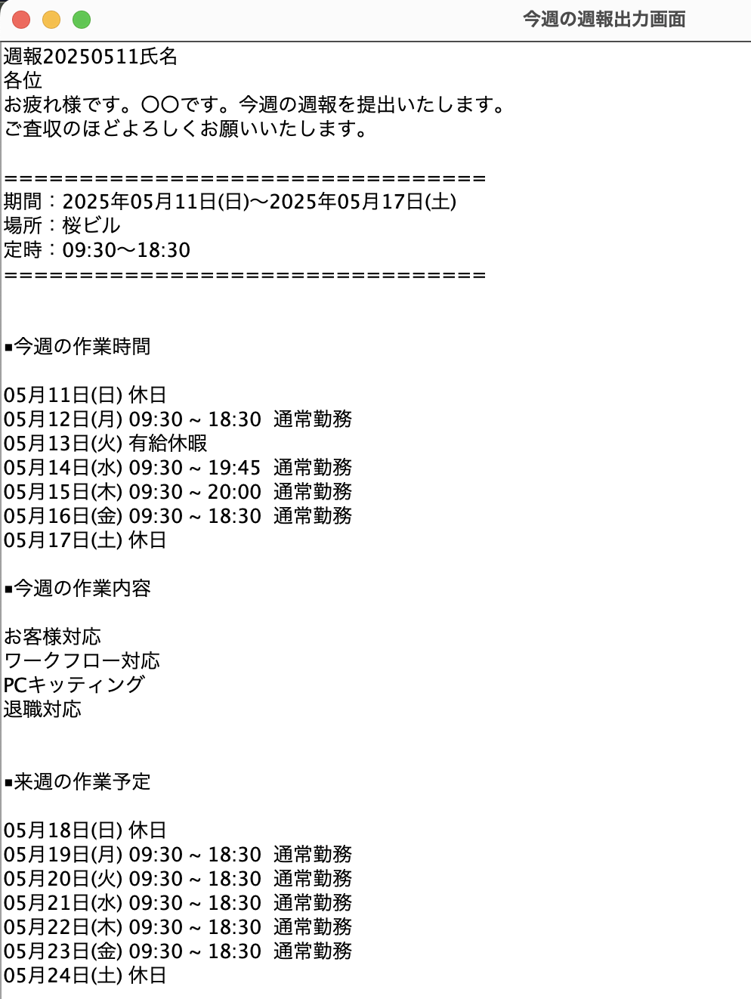

週報メーカー
Swingを用いた週報メール作成のための入力とメールの文章出力ができるアプリケーション
アプリについて
言語：Java
開発環境：INtelliJ IDEA CE
フレームワーク：Swing
制作期間：5週間(リファクタリング2週間含む)
Githubリンク機能
入力画面
今週の業務の時間と業務内容を入力する画面
デフォルトはこの状態です
退勤時間や休日や有給休暇かどうかはプルダウンで選択できます
業務内容はチェックボックスを選択する形式です
週報メール出力画面
テンプレートから入力して得た情報を元にメールの文章を出力します
制作の経緯
- 制作理由 -
週報のメール作成の効率と正確さについての問題をアプリで解決する方法を模索する中で、
JavaのフレームワークSwingを知り、Javaで画面構成に挑戦したかったため。
- 制作の流れ -
まず30時間ほどで必要な情報の入力と結果出力の機能があるアプリを作成
その後MVCモデルでのクラス構成やテンプレートの用意などのリファクタリングを行いました。
- 工夫した点 -
入力時の手間を減らす工夫：土日の休日設定・時間選択は15分刻みのコンボボックスを用意
保守性の高い設計の工夫：MVCモデルでの実装・テンプレートをtextファイルで用意
感想
JavaでGUIアプリを作れる手応えを得られました。
リファクタリングを通してMVCやテンプレート活用を学び保守性を高めることができ、満足のいく開発になりました。
今後はタブ切り替えにより先週分の週報を作れる機能を追加したいです。